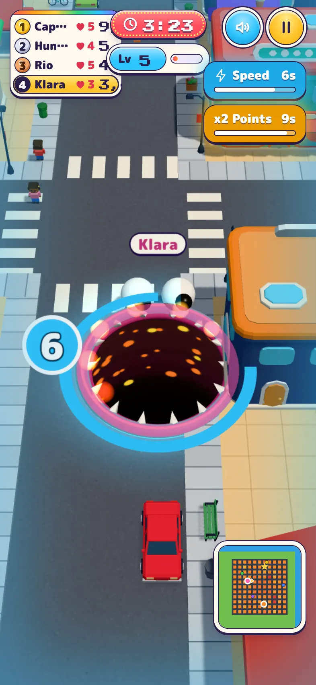
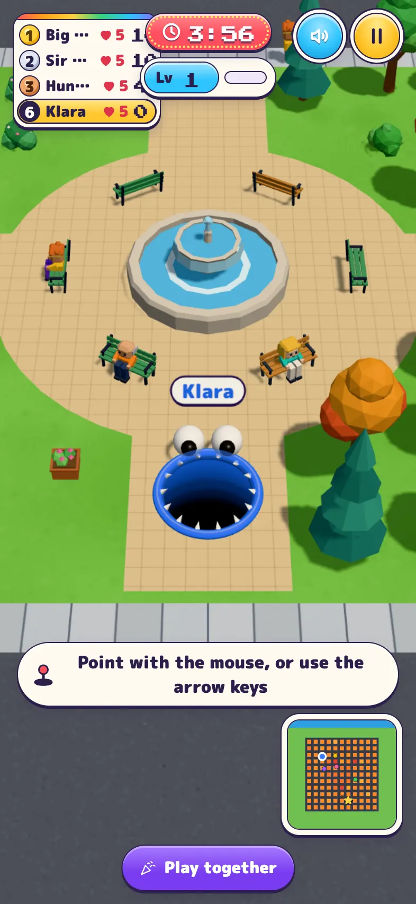
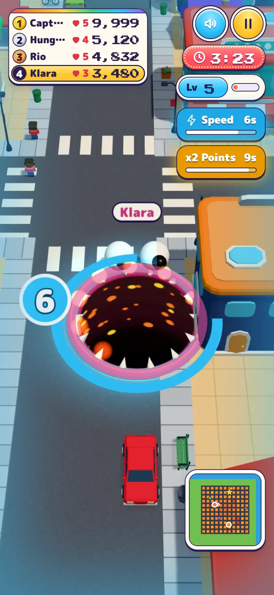
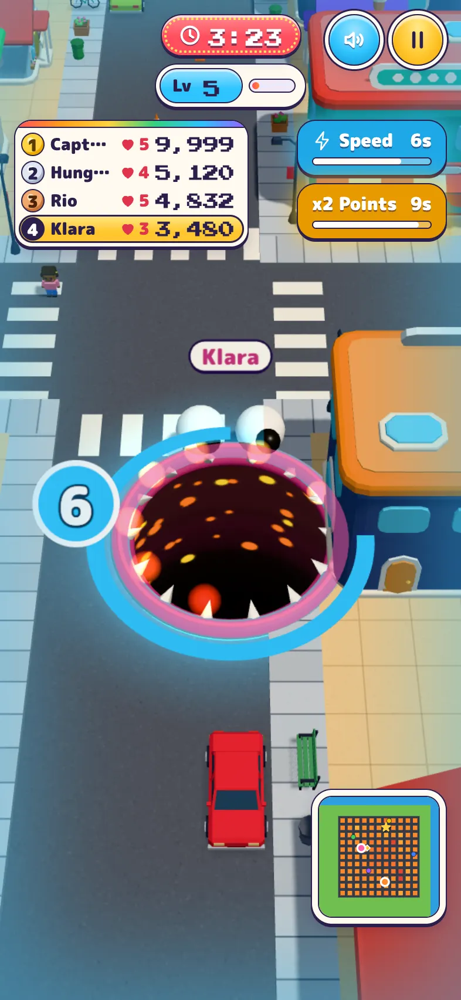
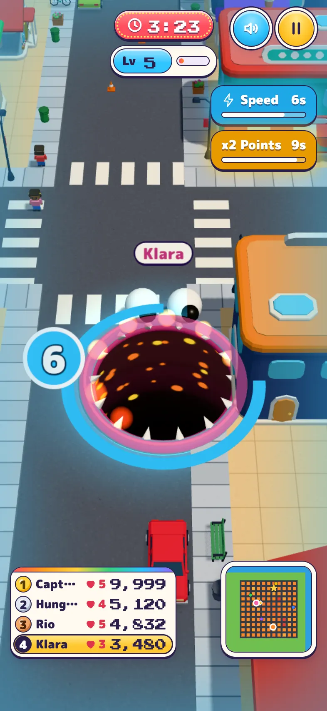

TodayAs it ships

Checked at 375, 393 and 430 in Chromium and WebKit: overlaps and cut-off scores at every width.
On a phone, the leaderboard tray is 140px wide and shares the top row with the clock, the level meter and the buttons. Most phones don't have room for all of that, and four-digit scores don't fit in the tray. Each option below gives the tray room for a full score and moves one other piece. Nothing changes on iPad.


Checked at 375, 393 and 430 in Chromium and WebKit: overlaps and cut-off scores at every width.

The tray stays top left and grows to fit. The clock, the level meter and the power-ups line up down the right side, under the buttons.
Checked at 375, 393 and 430 in Chromium and WebKit: no overlaps, every score whole.

The clock and the level meter keep the middle of the top row, as on iPad. The tray drops below them on the left, and the power-ups sit beside it on the right.
Checked at 375, 393 and 430 in Chromium and WebKit: no overlaps, every score whole.

The top row is the clock, the level meter and the buttons. The tray moves to the bottom left, level with the mini map, and the messages sit above both.
Checked at 375, 393 and 430 in Chromium and WebKit: no overlaps, every score whole; it clears the Play together button by 8px.